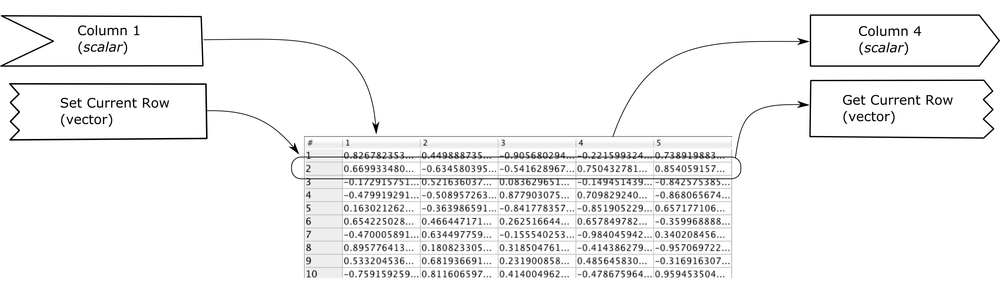

DataWorld
Data Worlds are essentially spreadsheets or tables that can be used to send data to and recevieve data from (primarily) neural networks. They are wrappers around Simbrain Tables. The main feature of data worlds is that they are set up to always have a current row. That row is what is used to send and receive data. If edit > iteration mode is set then at each workspace update the current row is advanced. This can be useful for sending data to a network or recording data from a network. The STDP Workspace simulation provides a useful example of a dataworld in action.
A standard use of data worlds is to provide inputs to a neural network. In that case, each row in a Data World corresponds to an input or output vector, and each column corresponds to an input node in a neural network.
File
Open / Save: Open and save a world as a .xml file. When saving this way (from DataWorld window), the format is less human readable but all associated information about the DataWorld is saved, e.g. if iteration mode is turned on, it will be saved.
Save-As: Saves a world as a .xml file with a name specified by the user.
Import/Export .csv > Import (.csv) : Import data from a .csv file (comma separated values).
Import/Export .csv > Export (.csv) : Export data to a .csv file (comma separated values).
Close: Closes the current DataWorld.
Edit
See Tables/Menus.
Pop-up Menu
Send Coupling To: Sends the highlighted data to another world to be coupled. See couplings for more information.
Receive Coupling From: Receives data from another world to be coupled with the highlighted data. See couplings for more information.
See Tables/Menus for other menu items.
Toolbar
See Tables/Toolbars.
Data World Couplings

For more information see the Coupling documentation.
Remember that data worlds have a current row, and that data is sent from and received to that row. The current row can be associated with vector consumers and producers, and scalar consumers and producers.
Vector couplings are straightforward. Vector producers take the value of the current row and send it out to a vector consumer, e.g. a neuron group. Vector consumers receive a vector value and apply it to the current row, truncating if necessary.
Scalar couplings are tied to specific columns. Thus these attributes have names like "Column 1". A scalar producer for a column takes the value of that column in the current row and sends it to a scalar consumer, e.g. a neuron. A scalar consumer for a column receives a scalar value and it applies it to that column, at the current row.